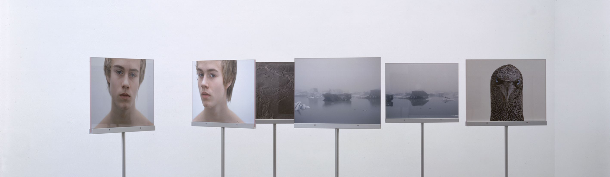

Roni Horn
KUKJE GALLERY
2016. 05. 19 - 2016. 06. 23
KUKJE GALLERY
2016. 05. 19 - 2016. 06. 23
1970년대 중반부터 로니 혼은 조각, 사진, 드로잉 그리고 책들을 제작하면서 각 영역에 대한 정의를 확장시켜 왔다. 그녀의 작품들은 자연, 정체성, 이원성들에 대해 탐색하는 예리한 철학적 질문들과 재료 연구에 기반하고 있다. 혼의 폭넓은 작업은 대상들의 이미지와 텍스트를 분할하고 병치시킴으로써 섹슈얼리티와 젠더의 정의들에 대해 끊임없이 도전하고 있으며 이를 통해 상이한 매체들 사이에서 깊은 반향을 일으키는 대화들을 창출해내고 있다. 매우 변형되기 쉬운 주체들에 주목함으로써 혼은 우리의 변화하는 자연환경 속에서 발견할 수 있는 인간의 지각과 시각적 경험에 대해 지속적으로 탐구한다.
PHOTO
